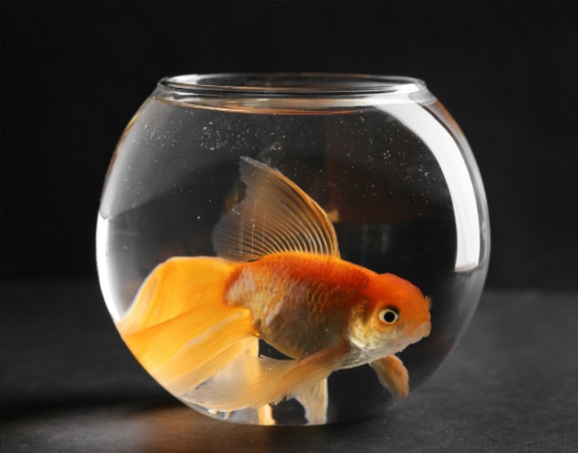

"Pavel Duchovny"
build_context(user="audience", topic="speaker")
db.speakers.findOne({ name: "Pavel Duchovny" })
Pavel Duchovny is a Developer Advocate at MongoDB who helps developers give AI agents long-term memory with Atlas and Vector Search, and he’s your speaker today.

You’ll run out of space
Most of them aren’t relevant to the current chat
Love pasta but now shouldn’t eat it
Every message in the conversation is recorded.
record_turn()Durable facts become long-term memories.
extraction (async)The right memories reach your agent when it needs them.
build_context()Decide what becomes a long-term memory, and what doesn’t.
Pick the few memories that matter for this request.
Keep memories current, and let go of what’s stale.
“Yesterday I rated matcha with 1 star.”
“I’m allergic to gluten.” (direct)
“Prefers oat milk.” (generalized)
“Deliver on Saturday mornings, never on weekdays.”
“‘The usual order’ means bread, eggs and bananas.”
Will it still be true next week?
Does this agent need it?
How sure are we?
Did the user say it?
“I’m allergic to gluten.”
“She probably doesn’t like matcha.”
You record each turn as short-term memoryrole · content · session_id
After N messages, or when the chat goes idleN=6 · idle 30s
Categorize with an LLMtype · stated · conf · ttl
Long-term memories in MongoDB, with vector embeddings1,024 dims · $vectorSearch
Classify each piece of information by type, keep what’s durable and relevant, and know what was stated and what was guessed.
Decide what becomes a long-term memory, and what doesn’t.
Pick the few memories that matter for this request.
Keep memories current, and let go of what’s stale.
“weekend”: no match
Delivery on Saturday mornings → weekend
In Agent Engine: build_context does all three.
Retrieve semantically and pin the constraints that must apply to every request.
Decide what becomes a long-term memory, and what doesn’t.
Pick the few memories that matter for this request.
Keep memories current, and let go of what’s stale.
New information adds, updates or reinforces what the agent knows. What’s short-lived, or what the user asks to forget, gets deleted.
✓Not everything. Keep durable facts, drop short-lived details. Agent Engine extracts by type, in the background.
✓Search by meaning with vector search (or hybrid search) and pin the constraints.
✓Memory is a lifecycle. Keep version history. Expire short-lived data and explicitly delete everything the user asks to forget.